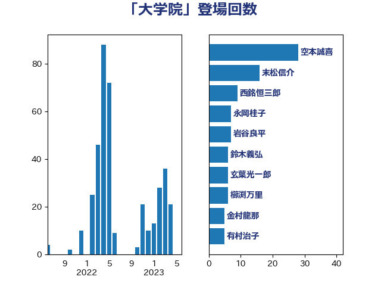

単語「大学院」

| 空本誠喜 | 日本維新の会 | 28 回 |
| 末松信介 | 自由民主党 | 15 回 |
| 西銘恒三郎 | 自由民主党 | 9 回 |
| 浮島智子 | 公明党 | 7 回 |
| 玄葉光一郎 | 立憲民主党 | 6 回 |
| 大島敦 | 立憲民主党 | 5 回 |
| 山崎正恭 | 公明党 | 5 回 |
| 田村智子 | 日本共産党 | 5 回 |
| 一谷勇一郎 | 日本維新の会 | 4 回 |
| 堂故茂 | 自由民主党 | 4 回 |
| 萩生田光一 | 自由民主党 | 4 回 |
| 大塚耕平 | 国民民主党 | 3 回 |
| 宮本岳志 | 日本共産党 | 3 回 |
| 宮沢洋一 | 自由民主党 | 3 回 |
| 山井和則 | 立憲民主党 | 3 回 |
| 岸田文雄 | 自由民主党 | 3 回 |
| 平木大作 | 公明党 | 3 回 |
| 有村治子 | 自由民主党 | 3 回 |
| 本庄知史 | 立憲民主党 | 3 回 |
| 矢倉克夫 | 公明党 | 3 回 |
| 石井苗子 | 日本維新の会 | 3 回 |
| 義家弘介 | 自由民主党 | 3 回 |
| 舩後靖彦 | れいわ新選組 | 3 回 |
| 鶴保庸介 | 自由民主党 | 3 回 |
| あかま二郎 | 自由民主党 | 2 回 |
| あべ俊子 | 自由民主党 | 2 回 |
| 中村裕之 | 自由民主党 | 2 回 |
| 亀岡偉民 | 自由民主党 | 2 回 |
| 吉田はるみ | 立憲民主党 | 2 回 |
| 大西健介 | 立憲民主党 | 2 回 |
| 守島正 | 日本維新の会 | 2 回 |
| 山口晋 | 自由民主党 | 2 回 |
| 川田龍平 | 立憲民主党 | 2 回 |
| 打越さく良 | 立憲民主党 | 2 回 |
| 斎藤嘉隆 | 立憲民主党 | 2 回 |
| 木原誠二 | 自由民主党 | 2 回 |
| 柳ヶ瀬裕文 | 日本維新の会 | 2 回 |
| 柴田巧 | 日本維新の会 | 2 回 |
| 梅村聡 | 日本維新の会 | 2 回 |
| 森屋宏 | 自由民主党 | 2 回 |
| 櫛渕万里 | れいわ新選組 | 2 回 |
| 櫻井周 | 立憲民主党 | 2 回 |
| 田島麻衣子 | 立憲民主党 | 2 回 |
| 福島伸享 | 無所属 | 2 回 |
| 緑川貴士 | 立憲民主党 | 2 回 |
| 荒井優 | 立憲民主党 | 2 回 |
| 赤羽一嘉 | 公明党 | 2 回 |
| 野田国義 | 立憲民主党 | 2 回 |
| 金子恵美 | 立憲民主党 | 2 回 |
| 鈴木義弘 | 国民民主党 | 2 回 |
| 鈴木馨祐 | 自由民主党 | 2 回 |
| 長友慎治 | 国民民主党 | 2 回 |
| 関芳弘 | 自由民主党 | 2 回 |
| 高橋千鶴子 | 日本共産党 | 2 回 |
| 高良鉄美 | 無所属 | 2 回 |
| 鰐淵洋子 | 公明党 | 2 回 |
| ながえ孝子 | 無所属 | 1 回 |
| 上野賢一郎 | 自由民主党 | 1 回 |
| 中川郁子 | 自由民主党 | 1 回 |
| 中曽根康隆 | 自由民主党 | 1 回 |
| 串田誠一 | 日本維新の会 | 1 回 |
| 今井絵理子 | 自由民主党 | 1 回 |
| 伊佐進一 | 公明党 | 1 回 |
| 伊藤俊輔 | 立憲民主党 | 1 回 |
| 伊藤孝恵 | 国民民主党 | 1 回 |
| 伊藤孝江 | 公明党 | 1 回 |
| 加田裕之 | 自由民主党 | 1 回 |
| 務台俊介 | 自由民主党 | 1 回 |
| 古屋範子 | 公明党 | 1 回 |
| 和田政宗 | 自由民主党 | 1 回 |
| 和田義明 | 自由民主党 | 1 回 |
| 塩村あやか | 立憲民主党 | 1 回 |
| 塩田博昭 | 公明党 | 1 回 |
| 大野敬太郎 | 自由民主党 | 1 回 |
| 宮崎政久 | 自由民主党 | 1 回 |
| 宮本徹 | 日本共産党 | 1 回 |
| 寺田静 | 無所属 | 1 回 |
| 小熊慎司 | 立憲民主党 | 1 回 |
| 尾身朝子 | 自由民主党 | 1 回 |
| 山下芳生 | 日本共産党 | 1 回 |
| 山口那津男 | 公明党 | 1 回 |
| 山本順三 | 自由民主党 | 1 回 |
| 山本香苗 | 公明党 | 1 回 |
| 岡本あき子 | 立憲民主党 | 1 回 |
| 岡本三成 | 公明党 | 1 回 |
| 岸信夫 | 自由民主党 | 1 回 |
| 平口洋 | 自由民主党 | 1 回 |
| 徳永エリ | 立憲民主党 | 1 回 |
| 斎藤アレックス | 国民民主党 | 1 回 |
| 新妻秀規 | 公明党 | 1 回 |
| 杉本和巳 | 日本維新の会 | 1 回 |
| 松原仁 | 立憲民主党 | 1 回 |
| 林芳正 | 自由民主党 | 1 回 |
| 森まさこ | 自由民主党 | 1 回 |
| 森田俊和 | 立憲民主党 | 1 回 |
| 森英介 | 自由民主党 | 1 回 |
| 永岡桂子 | 自由民主党 | 1 回 |
| 沢田良 | 日本維新の会 | 1 回 |
| 渡辺博道 | 自由民主党 | 1 回 |
| 牧義夫 | 立憲民主党 | 1 回 |
| 猪口邦子 | 自由民主党 | 1 回 |
| 田村まみ | 国民民主党 | 1 回 |
| 畦元将吾 | 自由民主党 | 1 回 |
| 白石洋一 | 立憲民主党 | 1 回 |
| 石井章 | 日本維新の会 | 1 回 |
| 磯崎仁彦 | 自由民主党 | 1 回 |
| 稲津久 | 公明党 | 1 回 |
| 笠浩史 | 無所属 | 1 回 |
| 紙智子 | 日本共産党 | 1 回 |
| 舟山康江 | 国民民主党 | 1 回 |
| 茂木敏充 | 自由民主党 | 1 回 |
| 藤巻健太 | 日本維新の会 | 1 回 |
| 藤田文武 | 日本維新の会 | 1 回 |
| 西岡秀子 | 国民民主党 | 1 回 |
| 足立康史 | 日本維新の会 | 1 回 |
| 進藤金日子 | 自由民主党 | 1 回 |
| 野田佳彦 | 立憲民主党 | 1 回 |
| 金村龍那 | 日本維新の会 | 1 回 |
| 長浜博行 | 無所属 | 1 回 |
| 阿部知子 | 立憲民主党 | 1 回 |
| 青木一彦 | 自由民主党 | 1 回 |
| 高市早苗 | 自由民主党 | 1 回 |
| 高木毅 | 自由民主党 | 1 回 |
| 高階恵美子 | 自由民主党 | 1 回 |